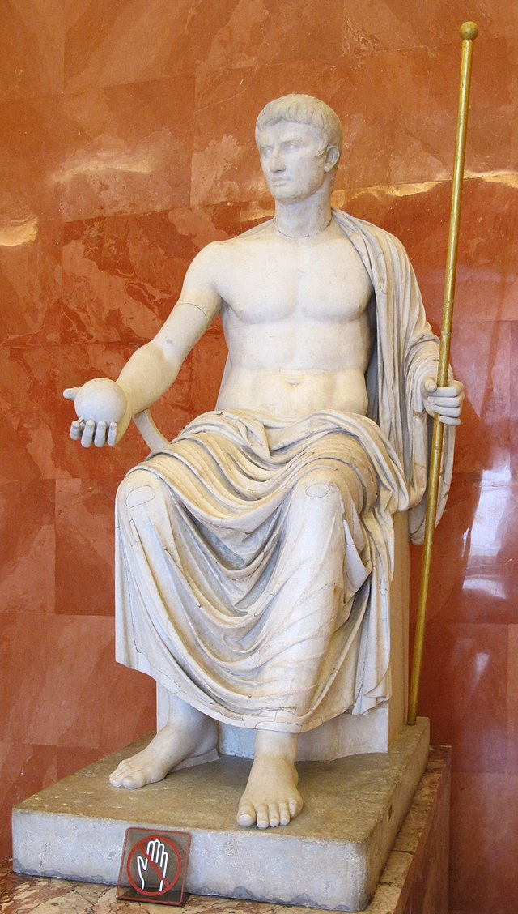
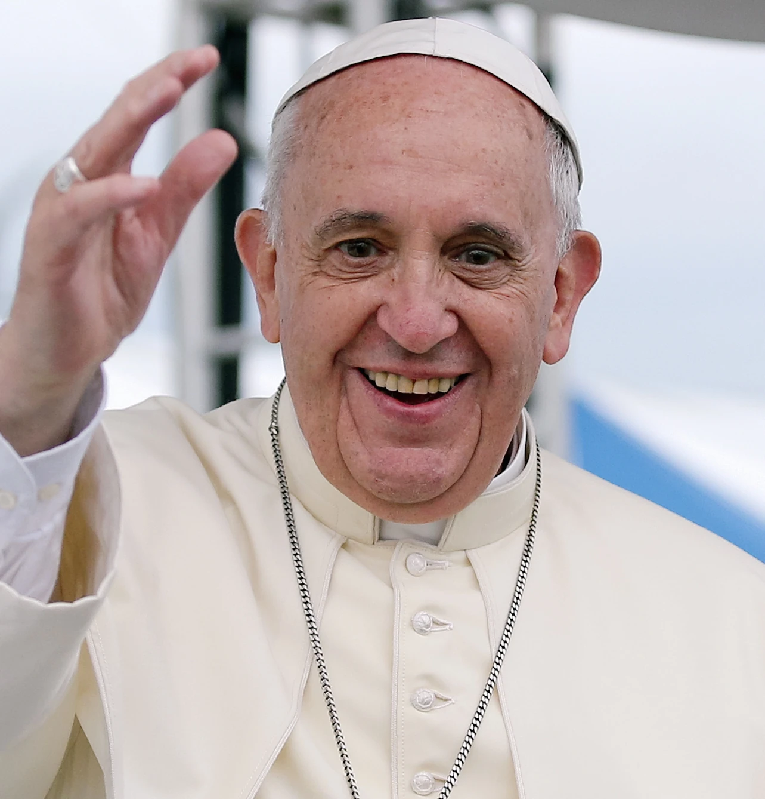

เทวาธิปไตย คือระบอบการปกครองที่มีพระเจ้าหรือเทพเป็นประมุข หรือในความหมายกว้าง ๆ คือระบอบการปกครองที่รัฐปกครองโดยอำนาจจากเทพ (divine guidance) หรือโดยผู้ที่ถือกันว่าได้รับอำนาจหรือการดลใจโดยตรงจากเทพ[3] ในภาษากรีกคอยนี (Koine Greek) หรือภาษากรีกสามัญคำว่า “theocracy” มาจากคำว่า “kra′tos” โดย “the.os” หรือ “ปกครองโดยพระเจ้า” สำหรับผู้มีความศรัทธาแล้วระบบนี้ก็เป็นระบอบการปกครองที่ใช้อำนาจจากเทพในการปกครองมวลมนุษย์ในโลก ไม่โดยผู้ที่เป็นเทพกลับชาติมาเกิด (incarnation) ก็มักจะโดยผู้แทนของศาสนจักรที่มีอำนาจเหนืออาณาจักร[4] รัฐบาลที่ปกครองโดยระบบเทวาธิปไตยปกครองโดยเทพธรรมนูญ (theonomy) ระบอบเทวาธิปไตยควรจะแยกจากระบบการปกครองอื่น ๆ ที่มีศาสนาประจำชาติ (state religion) หรือรัฐบาลที่มีอิทธิพลจากเทวปรัชญาหรือศีลธรรม หรือระบบราชาธิปไตยที่ปกครอง “โดยพระคุณของพระเจ้า”


พระสันตะปาปาเป็นผู้นำคริสตจักรโรมันคาทอลิกทั่วโลกและประมุขแห่งนครรัฐวาติกัน โดยถือว่าเป็นผู้สืบตำแหน่งจากนักบุญเปโตร หนึ่งในอัครทูตของพระเยซู พระสันตะปาปาฟรานซิสคือพระองค์ปัจจุบัน ซึ่งได้รับตำแหน่งเมื่อวันที่ 13 มีนาคม ค.ศ. 2013 ตำแหน่งนี้เรียกว่า "ปาปาซี" และรัฐบาลคริสตจักรในพระสันตะปาปาเรียกว่า "สันตะสำนัก" ตั้งอยู่ในกรุงโรม ในอดีต พระสันตะปาปามีบทบาททั้งด้านศาสนาและการเมืองในยุโรป เช่น การเผยแผ่ศาสนา การตัดสินความขัดแย้ง และการสนับสนุนสงคราม ปัจจุบัน บทบาทของพระสันตะปาปาเน้นด้านศาสนา คริสต์ศาสนสัมพันธ์ การกุศล และสิทธิมนุษยชน โดยในปี ค.ศ. 1870 ได้ประกาศว่าพระสันตะปาปาไม่เคยผิดพลาดในคำสอนด้านความเชื่อและศีลธรรม แต่ใช้อำนาจนี้ไม่บ่อยนัก เช่น ในปี ค.ศ. 1950 ได้ยืนยันคำสอนเรื่องแม่พระรับเกียรติยกขึ้นสวรรค์ ขอรับ